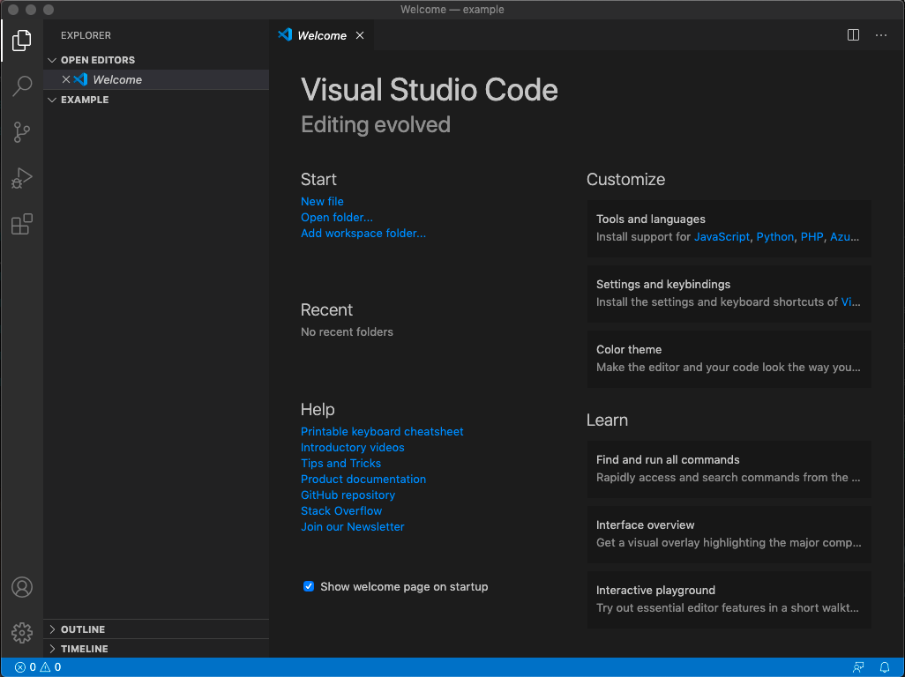
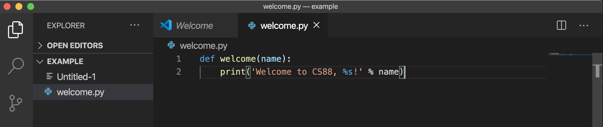
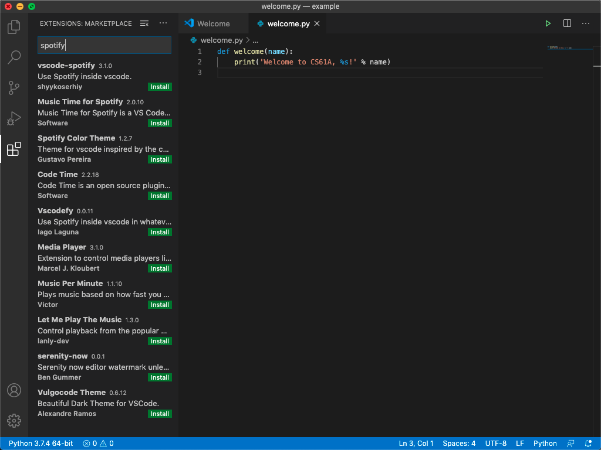

Visual Studio Code
Introduction
Visual Studio Code (VS Code) is an open source text editor developed by Microsoft and is free to use. It's known for being relatively lightweight while also incorporating key features found in modern IDE's such as Git integration and an extensive debugger. This makes VS Code great for anything from simple Python scripting to denser software engineering projects.
Getting VS Code on your own computer
Visit VS Code's website and follow the instructions to install it on your computer.
Example: welcome.py
By now, you should have VS Code installed. You have the option
of either finding the application or opening it up from the terminal.
Recall from Lab 0 that you can open a terminal on the school
computers by pressing Ctrl-Alt-t.
Let's first create and navigate to a directory called example, using
the UNIX commands you learned in Lab 0:
mkdir ~/Desktop/example
cd ~/Desktop/exampleOpening files
Now let's open up VS Code!
For Mac users, you'll most likely find VS Code in Applications.
For Ubuntu users, you'll most likely find VS Code by putting it in the search bar.
For Windows users, you'll most likely find VS Code in Program Files.
You can also open VS Code in your current working directory via command line.
code .If the above command doesn't work, try opening the Command Palette (Cmd+Shift+P for mac) and type 'shell command' to find the Shell Command: Install 'code' command in PATH command.
VS Code will open up to a welcome page. Open the explorer (page icon in the top left
corner) then click EXAMPLE. To create a new file, either right click below EXAMPLE
and select "New File" or click the page icon with a plus in the corner. Let's name our
file welcome.py. A pop-up will appear in the bottom right corner prompting you to install
the Python extension. We'll talk more about extensions later, but just install the
Python extension for now, and ignore any other pop-ups that may appear. Now, we can begin programming!

Editing files
Now we have VS Code open, we can begin writing our first Python file. We'll be writing a short program that prints out a welcome message when executed. Don't worry, we don't expect you to know any Python yet! All you have to do is type in the following:
def welcome(name):
print('Welcome to CS88, %s!' % name)Once you've finished typing, VS Code should look something like this:

To save, you can just hit Ctrl-s (cmd-s on Mac) and the white dot by the file name should disappear.
Running Python
Back in our terminal, we're currently in our example directory.
Let's play around with our code. In the terminal, start by typing
python3 -i welcome.pyThis command does the following:
python3is the command that starts Python- The
-iflag tells Python to start in interactive mode, which allows you to type in Python commands from your terminal welcome.pyis the name of the Python file we want to run
Notice that the Python interpreter says >>>. This means Python is
ready to take a command.
Recall that we defined a function called welcome. Let's see what it
does! Type in the following:
>>> welcome('Shreya')Python will then print out
Welcome to CS88, Shreya!Our code works! Feel free to try it out with your own name. Ok, now let's close Python by typing in
>>> exit()There are a couple of ways to exit Python. You can type in
exit()orquit(). On MacOS and Linux, you can also type inCtrl-d(this doesn't work on Windows).
Congratulations, you've edited your first file in VS Code!
Keyboard Shortcuts
VS Code has many, many keyboard shortcuts. Here are a few useful
ones! (for Mac users, replace all the Ctrl sequences with cmd)
Ctrl-`: open an integrated terminal in VS CodeCtrl-s: saves the current fileCtrl-x: cuts the entire line your cursor is onCtrl-v: pastes the entire line you cut in the line above your cursor OR pastes the selected text in placeCtrl-z: undoCtrl-shift-z: redotab: indent a line or a group of linesshift-tab: dedent a line or a group of linesCtrl-d: highlights the current word. For everyCtrl-dyou type after this first word, it will highlight every next instance of the word. This allows you to easily rename variables with multiple cursors! (Play around with this one, it's fun and very practical!)Ctrl-tab: moves you to the next tab (Ctrlon Mac as well)Ctrl-shift-tab: moves you to the previous tab (Ctrlon Mac as well)Ctrl-f: search for a wordCtrl-shift-f: searches through all tabs
Extensions
Extensions allow you to customize your text editor. They are pieces of software
written by people like you and me or companies to improve everyone's quality of life.
Extensions can do anything ranging from changing the color scheme, to allowing you
to control Spotify while you code, to letting you share your workspace in real
time with your friends (❌ not on class assignments though ❌)! Here
is the documentation regarding extensions, but feel free to browse on your own by hitting Ctrl+shift+x.

This guide only scratches the surface of VS Code's functionality. Remember, if there's something you wish VS Code could do, it probably can. Just Google it!
Pair Programming
You can pair program in VSCode using the Live Share extension.
Once you and your partner both have the extension installed, you'll need to start a new Live Share session and then explicitly share your code and terminal with each other. See the instructions on the download page for more details on sharing and joining sessions.